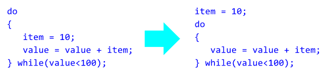
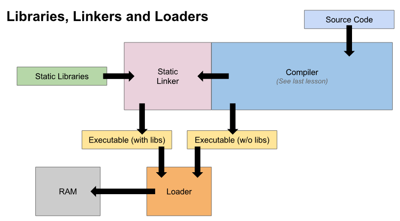

Source code is found on the hard drive. It is moved into the compiler, all the unnecessary comments of whitespace is removed.Next comes the optimisation, in which long or complicated procedures are broken down into their fundamental parts. The code is then analysed and any errors found in the form of Syntax, Semantic, or Lexical are detected, and will stop compilation. Once there are no more errors, the code is then compiled.
After the analysis stages are complete, the code moves on to the next step.
Here, it is translated into an intermediate code. In languages such as java, this is the final step,
as bytecode is what's run in the JVM. In other languages, such as C++, this stage is just another stage
in the compilation. Intermediate code is machine independant, which means it can be run on any architecture.
Though it has been translated, the intermediary code is not machine code yet.
The code is optimised so that it can run as efficiently as possible a d therefore require less resources, without
altering the function as intended. Examples include removing useless variables and simplifying loops.

At this point, it is determined whether or not the program will include libraries within the compiled file. If so, the static linker will fetch the static libraries and add them to the program loader. If the libraries will instead be dynamic, this step will be skipped for now. Once in the program loader, the dynamic linker will add .dll files to the program. These libraries are dynamic, so are not included with the compiled program, This means they must be present when the file is executed for the program to fnunction correctly. Once this process has finished, the loader loads the file into RAM.
